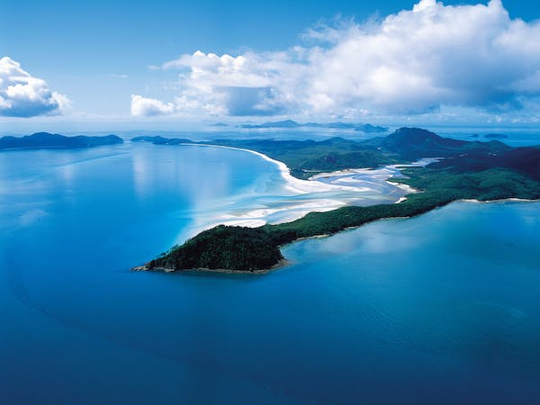
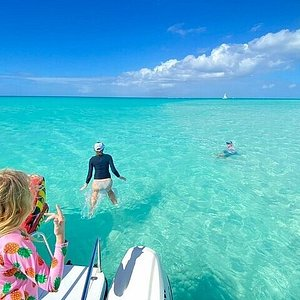
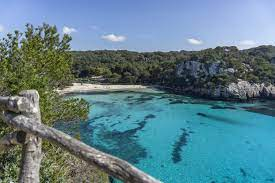

Visiting the World's Cleanest Beach
Whitehaven Beach in the Whitsunday Islands is known for its incredibly
white and pristine silica sand, crystal-clear waters, and minimal
pollution. The surrounding area is a protected national park, and
visitors are encouraged to keep the beach clean.

-
Pristine Silica Sand: Whitehaven Beach is famous for its exceptionally
pure silica sand, which is incredibly fine and almost completely
white. This unique feature makes it one of the most visually stunning
and softest beaches in the world.
-
Crystal-Clear Waters: The beach is bordered by crystal-clear turquoise
waters that are not only visually breathtaking but also perfect for
swimming, snorkeling, and water activities. The water is so clear that
it allows you to see an array of marine life and coral formations.
-
Protected Natural Beauty: Whitehaven Beach is part of the Whitsunday
Islands National Park, and it is protected to maintain its natural
beauty. The beach and its surroundings are relatively unspoiled,
making it a pristine and tranquil destination for nature lovers and
beach enthusiasts.
Grace Bay Beach is renowned for its clean, powdery white sand and clear
turquoise waters. The local government and businesses in Turks and
Caicos have made significant efforts to maintain the cleanliness and
environmental health of this beach.

-
Powdery White Sand: Grace Bay Beach boasts incredibly fine and powdery
white sand that stretches for miles. It's a delight to walk on, and
its pristine beauty makes it a paradise for beachgoers.
-
Crystal-Clear Turquoise Waters: The beach is known for its
crystal-clear turquoise waters, providing a stunning contrast to the
white sand. These pristine waters are not only beautiful to look at
but also perfect for swimming and water sports.
-
Protected Natural Beauty: Grace Bay Beach is located in Turks and
Caicos, where there are dedicated efforts to maintain the cleanliness
and environmental health of the beach. You'll find a well-preserved
natural paradise to enjoy.
This small and secluded beach in Menorca is famous for its pristine and
clear waters. It's a relatively untouched gem with clean surroundings
and beautiful natural landscapes.

-
Turquoise Gem of Menorca: Cala Macarelleta Beach is a hidden gem on
the island of Menorca, known for its stunning turquoise waters and
natural beauty. It's a picturesque slice of paradise in the
Mediterranean.
-
Secluded Tranquility: This small beach is relatively secluded,
offering a serene and tranquil atmosphere. It's a perfect escape for
those seeking a peaceful and unspoiled coastal experience.
-
Breathtaking Scenic Surroundings: Surrounded by dramatic cliffs and
lush greenery, Cala Macarelleta provides a breathtaking backdrop for
relaxation and exploration. The scenery is perfect for hiking and
photography.